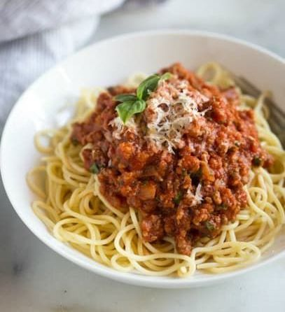

Spaghetti

Easy homemade spaghetti sauce that tastes way better than store bought
This is a homemade spaghetti meat sauce with wonderful flavor.
You can substitue the meat of your choice or even omit it to be vegan. Its a wonderful
tomato sauce that can be made in big batches or smaller batches very easily, you
will sure not want to miss out on making this recipe.
Ingridients
Olive oil
1 pound Ground beef ( or meat of your choice/ omit )
salt and pepper to taste
1 medium onion , chopped
15 ounces tomato sauce
6 ounces tomato paste
1/2 teaspoon Italian seasoning
1 Tablespoon dried parsley flakes
1 teaspoon garlic powder
crushed red pepper flakes , to taste
1 Tablespoon Worcestershire sauce
1 Tablespoon granulated sugar
cup water
1/4 cup fresh basil leaves (optional)
spaghetti noodles , for serving
Steps
- Season ground beef with salt and pepper
- In a large skillet add a drizzle of oil and saute chopped
onions until translucent
- Add ground beef and once fully coked drain excess grease
- Add tomato sauce, tomato paste, Italian seasoning, parsley,
garlic powder, crushed red peper, worcestershire,
and sugar to skillet.
- Still well to combine and bring to a boil. add water and stir well.
- Reduce heat and simmiler for at least 30 min, i suggest
2 for best flavor.
- When ready get a pot of water and bring to boil, then add your
sapghetti and cook to your package directions.
- While spaghetti cooks add chopped basil, then when ready serve.
Homepage